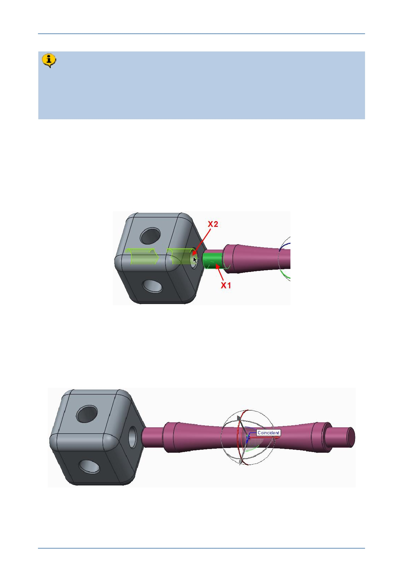

PTC Academic Program
By default, the Automatic option is used to place components in a Creo
Parametric assembly. The constraint type used is then based on the geometry
selected and the component location or orientation. To help with this process, try
to position the component being assembled as close as you can to its final
position. In the case of the strut, place it close to the hole it will be inserted into.
4. Adding the first assembly constraint:
Move the cursor over the cylindrical surface of the strut shown as X1 .
When the cylindrical surface of the strut pre-highlights, click to select it.
Move the cursor over the cylindrical surface of the hole in the corner cube model,
shown as X2 .
When the cylindrical surface of the hole pre-highlights, click to select it.
Creo Parametric recognized the two cylindrical surfaces and applied a Coincident
constraint to them. The strut should move until the peg is in-line with the hole and a
Coincident constraint label is displayed on the model.
Notice only one of the arrows and one of the circles in the 3D dragger is now colored.
These are the only directions the strut can now move in the assembly.
© 2012 PTC
Creo Parametric 2.0 Primer
Page 71